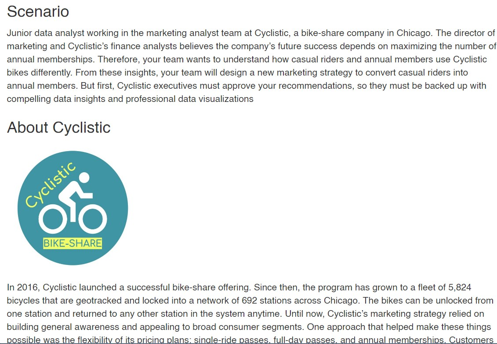
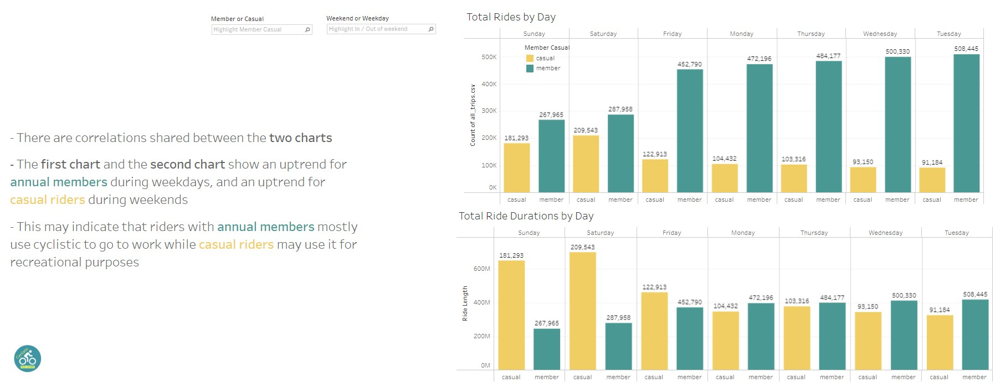
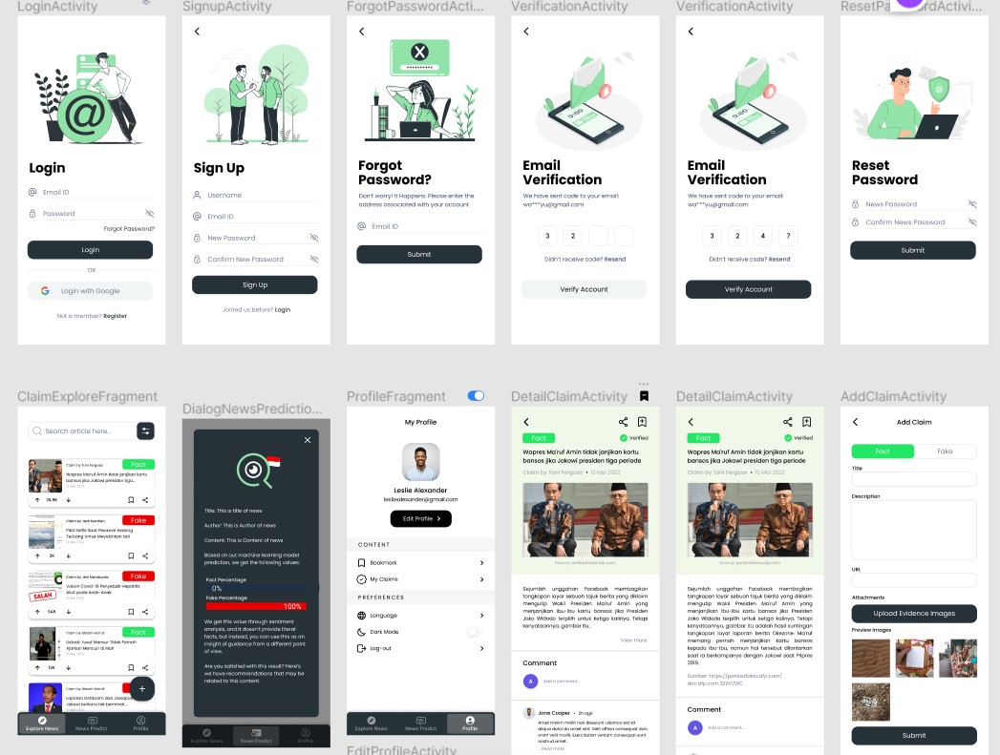
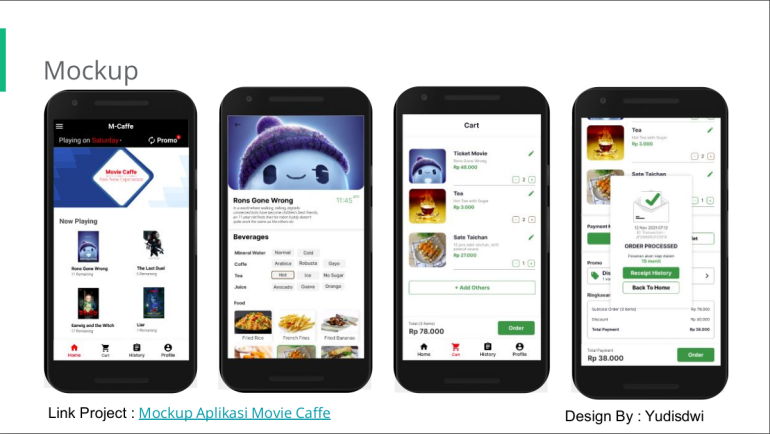

Portfolios
During my college year, I like to learn many things and work on many projects. Besides being
interested in software and data, I also like to develop games, graphic design, and a little bit
of 3d modelling, here are some of my recent projects

Cyclistic Study Case
Junior data analyst working in the marketing analyst team at Cyclistic, a bike-share
company in Chicago. The director of marketing and Cyclistic's finance analysts believes
the company's future success depends on maximizing the number of annual memberships.
Learn more
Data Analysis
Study Case

Cyclistic Data Visualization
This project is the continuation of the Cyclistic Study Case project, but now we focus on
visualizing the data using tableau
Learn more
Data Analysis
Study Case
Data Visualization
tableau

True Sight Indonesia
True Sight indonesia is an android app that helps user quickly validate the credibility
of a news. In this app user can search, post, or send a news to our machine learning
model to
predict the credibility using sentiment analysis.
Learn
more
Mobile App
Android
Machine Learning
Cloud Computing

Cinema Food
Cinema Food is a mobile-apps-based application to overcome the lengthy process of
ordering food and drinks as well as ordering a movie ticket menu that is separate from
the food menu.
Learn
more
Mobile App
Android